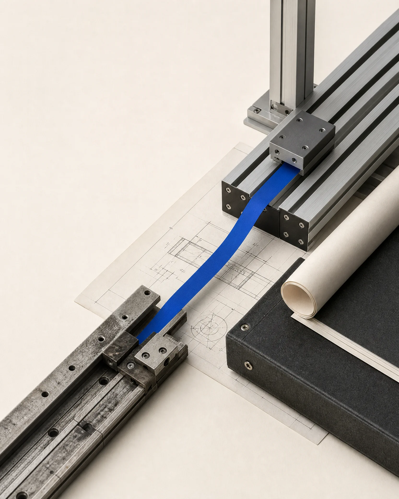

Zero
downtime nos clientes de missão crítica durante toda a migração
Do papel para a operação
Transformo legados críticos, oportunidades e IA em ativos operacionais rodando — com velocidade, poucos recursos e risco controlado.

Do diagnóstico ao ativo rodando.
Evidências
Uma plataforma crítica, milhões de simcards e quatro anos de mudança sem interromper a operação.
Zero
downtime nos clientes de missão crítica durante toda a migração
4×
crescimento da operação durante a travessia, não depois dela
100%
do sistema legado desligado ao final
2,5anos
de migração do core, cliente a cliente, com escrita dupla até cada virada
Números de uma travessia conduzida de 2022 a 2026. O estudo de caso completo está em preparação.
Por onde começar
Se você está perdido, comece aqui.
Em poucos dias eu mergulho na sua operação, nos seus sistemas e nos seus dados e devolvo um mapa claro: onde está o valor escondido, onde mora o risco real e qual o primeiro passo que se paga sozinho. É o passo que transforma ansiedade em plano.
Trocar a fundação da casa com a família morando dentro.
Existe um sistema no coração da sua empresa que já tem anos, que ninguém quer tocar e que ao mesmo tempo ninguém pode desligar. Eu conduzo a travessia para uma plataforma nova sem que a operação pare um único dia.
Depende de um sistema crítico que envelheceu e não pode parar.
A ideia certa parada no papel não vale nada. No ar, muda tudo.
Entre uma oportunidade e algo funcionando há decisões técnicas, riscos e dúvidas. Eu dou forma ao que ainda é esboço, desenho, construo e coloco para operar de verdade — rápido e com poucos recursos.
Tem uma oportunidade clara e precisa dela funcionando, não em slide.
IA de verdade não é hype. É resultado operacional, com risco controlado.
Eu transformo o vago “a gente devia usar IA” em um caso de uso que gera valor mensurável. Da primeira escolha ao processo rodando, a adoção acontece sem se tornar uma aventura cara.
Quer resultado real com IA e cansou de promessa.
Caso em destaque
Legado → FuturoUma plataforma crítica migrou cliente a cliente, com escrita dupla até cada virada. Enquanto o legado saía de cena, a operação quadruplicava.
Ler a travessiaSobre
Mais de 25 anos construindo e transformando sistemas que sustentam operações reais, atravessando gerações de tecnologia — de Clipper a IA. Hoje aplico método e repertório técnico para modernizar sistemas críticos e transformar oportunidades em ativos operacionais.
Contato
Se você depende de um sistema que não pode parar ou precisa transformar IA em resultado operacional, vale uma conversa.
Falar pelo LinkedIn